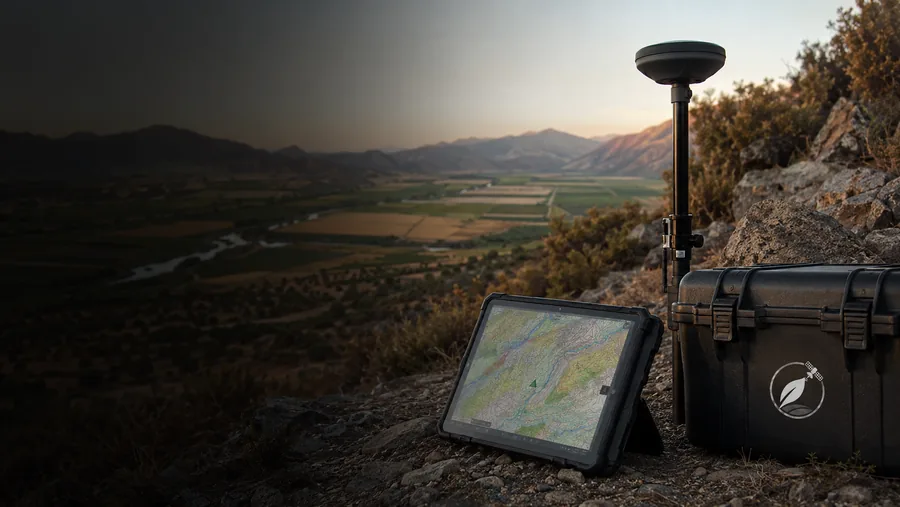

Esta guía está dirigida a equipos técnicos que coordinan capas, levantamientos e informes. Explica cómo estructurar datos geoespaciales para que la cartografía sea coherente entre disciplinas, fácil de actualizar y defendible en procesos de diagnóstico territorial y evaluación ambiental.
En resumen
- Defina alcance, estándares y un diccionario de atributos antes de colectar datos.
- Use una base de datos espacial centralizada con control de versiones y metadatos completos.
- Implemente reglas de calidad, validaciones automáticas y un flujo de trabajo de actualización.
- Documente fuentes, transformaciones y decisiones para que la cartografía sea defendible.
- Revise requisitos específicos del proyecto y criterios sectoriales (ej.: SEA) antes de finalizar entregables.
1. Definir alcance, estándares y producto cartográfico
Antes de levantar una sola coordenada, reúna al equipo técnico y acuerde el alcance: qué capas son necesarias (límites, redes, uso del suelo, levantamientos puntuales), el propósito de cada capa y los productos finales (mapas, shapefiles, servicios WMS/WFS). El término datos geoespaciales para proyectos debe aparecer en las especificaciones para que todos comprendan el objetivo común.
Proponga un conjunto mínimo de estándares:
- Sistema de referencia de coordenadas (elegir uno consistente con la normativa local y con los datos disponibles).
- Resolución y escala de trabajo para cada tipo de capa (levantamientos topográficos, ortofotos, etc.).
- Diccionario de atributos con nombres, tipos, códigos permitidos y reglas de obligatoria/condicionalidad.
- Convenciones de nombre de archivos y capas (proyecto_fecha_autor_tipo).
Recomendación: documente estas decisiones en un archivo de especificaciones que acompañe a la base de datos y a los entregables para facilitar la revisión técnica y la trazabilidad.
Punto clave
estandares
2. Diseñar la base de datos espacial centralizada
Una base de datos espacial única (por ejemplo PostGIS u otro gestor con soporte espacial) reduce duplicaciones y facilita consultas, relaciones y análisis. Diseñe un modelo lógico que incluya:
- Entidades principales y relaciones (polígonos, líneas, puntos, tablas complementarias).
- Diccionario de atributos vinculado a cada capa, con ejemplos y valores válidos.
- Índices espaciales y no espaciales para optimizar consultas.
- Mecanismos de acceso y roles (quién puede escribir, revisar, publicar).
Consejo práctico: automatice la carga desde levantamientos mediante plantillas y validadores para que los equipos de campo entreguen datos ya normalizados.
Punto clave
bd_espacial
3. Flujo de trabajo para gestión de capas y metadatos
Establezca un flujo de trabajo claro: ingestión → validación → almacenamiento → publicación. Para cada etapa defina responsables, pasos y herramientas. Los metadatos son fundamentales: registren origen, fecha, precisión, responsable, transformaciones aplicadas y restricciones de uso.
Incluya validaciones automáticas que verifiquen:
- Coherencia del sistema de coordenadas y proyecciones.
- Presencia de campos obligatorios del diccionario de atributos.
- Topologías básicas (no solapas donde no corresponda, nodos desconectados, polígonos sin orientación correcta).
Para publicación y visualización, documente simbología y escalas, y ofrezca servicios cartográficos a los equipos de decisión. Si requiere apoyo técnico para implementar servicios o flujos, consulte nuestros servicios en ../servicios.html.
Punto clave
capas_metadatos
4. Versionado, control de calidad y trazabilidad
Para que la cartografía sea defendible en informes o procesos de evaluación, implemente control de versiones y registro de cambios. Algunas prácticas recomendadas:
- Use ramas o esquemas de trabajo (producción, pruebas, borradores) y políticas de publicación.
- Registre cada modificación con autor, fecha y motivo; mantenga diffs espaciales cuando sea posible.
- Implemente pruebas automáticas que detecten regresiones (pérdida de atributos, cambios de CRS, geometrías inválidas).
Adicionalmente, mantenga copias de seguridad periódicas y snapshots que permitan reconstruir el estado de la base de datos en fechas clave del proyecto —esto es crucial cuando debe demostrarse qué información se empleó en una decisión técnica o administrativa.
Punto clave
versionamiento
5. Entregables, documentación y cómo defender la cartografía
Prepare paquetes de entrega que incluyan: extractos de la base de datos, archivos GIS estándar, metadatos completos, un registro de transformaciones (ex.: reproyecciones) y un informe metodológico que explique criterios de muestreo, errores conocidos y limitaciones. Una cartografía defendible debe permitir que un tercero reproduzca los procedimientos o, al menos, evalúe la consistencia técnica de los resultados.
Evite afirmaciones absolutas sobre cumplimiento sin verificar requisitos legales o sectoriales del caso particular; en proyectos sujetos a evaluación ambiental consulte los criterios aplicables y documente cómo sus datos responden a esos criterios.
Si necesita apoyo para revisar la documentación final o preparar defensas técnicas, puede coordinar una asesoría con nuestro equipo en ../contacto.html.
Punto clave
entrega_defensa
En DPZ Consulting abordamos la cartografía SIG y análisis espacial como un servicio acotado, con producto, plazo y alcance definidos.
Fuentes y referencias
Revisamos estas fuentes oficiales para preparar este contenido. La normativa puede actualizarse; verifica siempre el caso concreto antes de ejecutar un proyecto.
Preguntas frecuentes
¿Qué sistema de coordenadas debo usar para mi proyecto?
No existe una única respuesta universal; seleccione el sistema que sea compatible con los datos base disponibles y con la normativa o requerimientos del proyecto. Documente la elección y las transformaciones aplicadas para mantener trazabilidad.
¿Cómo asegurar que los levantamientos de campo encajen con las capas existentes?
Antes del trabajo de campo, entregue plantillas con el diccionario de atributos, el CRS predefinido y validadores automáticos. Al recibir los datos, ejecute validaciones espaciales y de atributos y devuelva observaciones técnicas a quien realizó el levantamiento.
¿Cuándo es necesario centralizar los datos en una base de datos espacial?
Centralice cuando el proyecto involucre múltiples disciplinas o versiones de datos; una base de datos espacial mejora consistencia, evita duplicaciones y facilita auditorías. Para proyectos simples o temporales, una estructura más ligera puede ser suficiente, pero siempre documente las reglas y responsables.